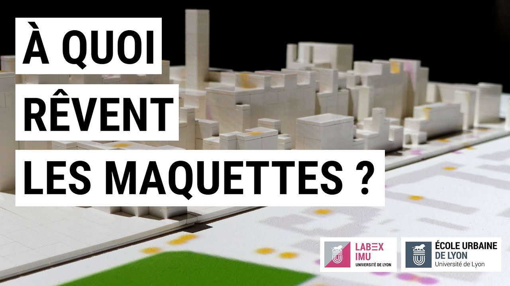

Semaine de l'anthropocène 2023
Workshop at the 5th edition of the maquettes workshop
In January 2023, I participated in a week-long workshop as part of the 5th edition of the atelier maquettes. This year's theme was "sensitive urban atmospheres," in collaboration with LabEx IMU (Intelligences des Mondes Urbains) of Lyon.
The project involved working with other students from different disciplines to produce a presentation in front of the elected officials of Villeurbanne.
At first, alongside the professors and researchers present, I worked to scan the physical model using a camera placed above, aiming to overlay 3D models of the city.
I collected the topographic data of Villeurbanne and modified it in Blender.
I later collaborated with another student to develop an algorithm to scan the height of the physical model in the room, which allowed us to colorize the buildings differently, highlighting their actual size.
The project then shifted toward a simpler objective as the presentation date approached quickly, and the 3D building projection wasn’t satisfying.
I recreated the environment in Unity with a simple 2D projection over the model. On this plan, I used Unity’s lighting system to simulate where the real lights were in the district.
The presentation was made in front of local elected officials from Villeurbanne, which was quite impressive for a student project. What I found particularly interesting was working with people who had no familiarity with computer science or video games, such as ergonomists. This required significant effort to communicate my work and understand what was asked of me by people unfamiliar with my tools.
Link to the 2022 edition of l'anthropocène, held at the same location and using the same model as the 2023 edition.